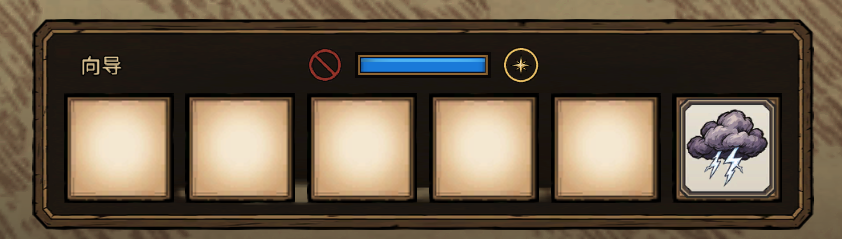
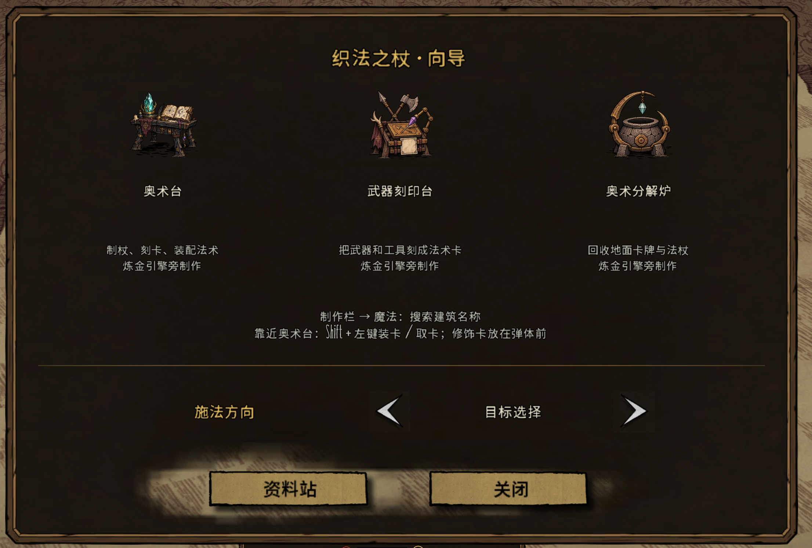

Release history
Official releases appear newest first. The first entry marks the initial release; later entries describe additions, changes and fixes since the previous release.
1.0.3 · New Item and Structure
- New item: Arcane Dust Coffer. A portable, single-slot container with unlimited Arcane Dust storage. Open it in your inventory, backpack, or on the ground. Craft at an Arcane Workbench with 1 Board, 2 Gold Nuggets, 2 Silk, and 4 Arcane Dust.
- New structure: Arcane Ember Lamp. Stores unlimited Arcane Dust and burns it to provide a soft violet light. It can be extinguished at any time. Prototype at an Alchemy Engine with 2 Cut Stone, 2 Gold Nuggets, 1 Purple Gem, and 4 Arcane Dust.
Subscribe on Steam Workshop · Download 1.0.3 and the offline field guide
1.0.2 · Cast Direction
- Added Cast Direction: open the in-game Guide to switch at any time. Target Selection is the default. Your choice is saved locally and affects only your player, without changing world settings or other players.
- Target Selection: when an object is selected, cast toward its actual position. For example, selecting a boss's head aims toward its position on the ground.
- Mouse Direction: always cast toward the ground position under the cursor, regardless of any hovered object. Useful for aiming at a precise spot on the ground.


Subscribe on Steam Workshop · Download 1.0.2 and the offline field guide
1.0.1 · Storm cloud visual update
Redrawn storm clouds retain Don't Starve-style inked artwork, with dark foreground billows and light transmitted from within.
- Clouds keep rolling through formation, attacks and dissipation. Light travels through cloud cavities; brief branching arcs fade before the lingering illumination.
- Three distinct internal discharge routes accompany the three warnings and strikes.
- Clouds and strike origins are slightly higher, with lightning emerging from inside or beneath the cloud. Alignment is retained across camera angles and enlarged spells.
- Strike count, timing, damage, range and other spell mechanics are unchanged.
Restart the game and world after updating. Both the host and participating players need the update. The existing save format is retained.
Subscribe on Steam Workshop · Download 1.0.1 and the offline field guide
1.0.0 · First stable release
Spellwoven Wands is officially released. The Workshop item, source repository, and Chinese and English field guides are now public.
- Collect randomized wands and arrange spell cards to combine homing, multicast, impact and timed payloads.
- Craft, engrave, edit and recycle with the Arcane Workbench, Weapon Engraving Table and Arcane Recycler.
- Harvest and fish with engraved tools; experiment with homing and enlarged stars.
- Arrange ocarina and kantele notes into musical phrases and adjust their pitch with tuning modifiers.
- Includes Chinese and English interfaces, a recipe catalog and wand stat references.
Upgrading from a test version: update the mod and restart the game and world. Existing wands and cards retain the current save format.
Subscribe on Steam Workshop · Download 1.0.0 and the offline field guide